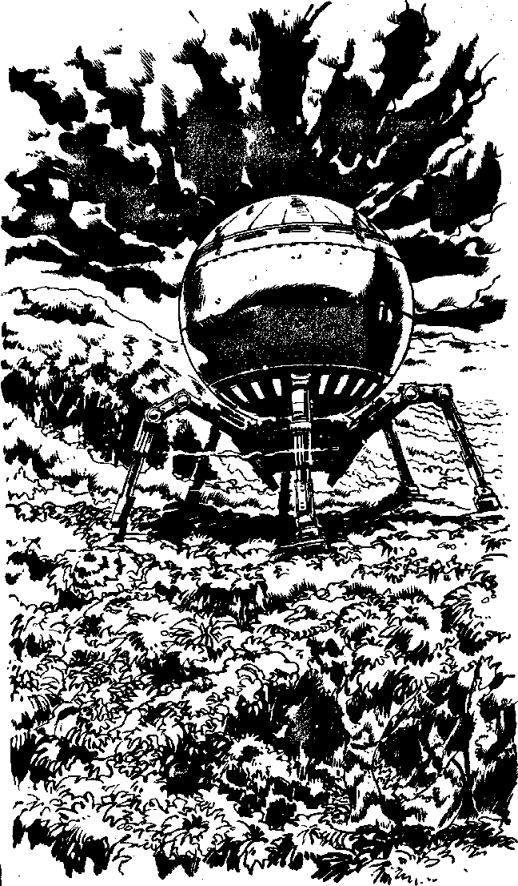

161
[Score a C]
Bloodhound hurries back with you to your Time Machines, Falcon's Wing and Hunter, and you both set out for the only Timehole on planet Hel, 600 AD, hoping finally to corner the Creche. You may use your Autodoc to restore up to 12 Endurance points on the way. While waiting to rematerialise, you ask CAIN about planet Hel. CAIN chimes: 'Planet Hel was discovered in 2978 AD by Skirrow, head of the Research Section of TIME, during the same voyage on which he discovered Skirrow's World. It is a tropical world with many dangerous predators, and plants which can trap and digest humans. There are no intelligent life forms. The air is breathable.' It seems that planet Hel was well named by its discoverer.
You rematerialise at the same instant as Bloodhound and Falcon's Wing settles slightly, as if on soft ground. You are resting on the top of a tropical rain forest. The tops of the trees are flattened by a mass of tangled creepers which form a carpet so dense that CAIN mistook it for the surface of the planet. Even the weight of Falcon's Wing has only bowed it slightly. You meet outside, on the tree carpet and move towards a Time Machine, undisguised by a hologram, which rests on the foliage a hundred metres away. Your Psychic Awareness tells you that the Creche are inside. As you watch, they begin to descend from the hatch of their machine. You must act quickly. Do you shout
| Thinkstrike, Bloodhound? | Turn to 12 |
| Power of Will, Bloodhound? | Turn to 21 |
| Blast to kill, Bloodhound? | Turn to 31 |